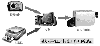
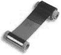
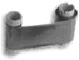

|
|
| 当前位置：电脑报电子版 > 1999 年 > 49 期 > OA专刊 > 证卡打印机技术一览 |
| 《 证卡打印机技术一览 》 |
|  人们在本世纪初就已经开始制作并使用各种身份识别卡片了，其制作流程肯定大家都见到过，简单地说就是把持证人的照片贴在一张有他的名字、编号以及其它个人信息的卡片上再盖上公章或者钢印即可。 尽管这种制作方式的初期投资相对来说较为低廉，但是，花费在其中的时间、劳力以及每张卡片的单独成本却是很高的，而且，用这些方法制作出来的证卡非常容易被仿冒，安全性极差。终于在80年代晚期到90年代早期的时候，一种被称为“数码打印”的崭新的证卡制作方法出现了。 今天，数码证卡打印机已经逐渐成为许多机构和企事业单位必备的制卡设备了，因为不仅数码证卡打印系统的技术已经逐渐成熟，而且其价格也开始平易近人起来了。一个标准的数码证卡打印系统由3个部分组成（如图1）： ·电脑：为你提供设计各式各样证卡的平台，你可以在电脑中输入想在证卡上出现的各种信息，而且，电脑处于连结其它两部分的中枢位置上。 ·影像输入设备（包括数码相机和扫描仪）：可以进行影像摄取，如果配合使用笔记本电脑和数码相机的话，更可组成流动制卡站，便于为不适合集中制证的人员进行现场制证。  ·数码证卡打印机：可以接受从电脑传送过来的信息，直接在卡片上打印出各种文字与图像。小型证卡打印机的体积只比鞋盒略大一点，重量也仅六七公斤，所以携带起来非常方便。 证卡打印机使用的打印技术不外乎染料升华与热转印这两种技术。这两种技术都会对经过打印头的色带进行加热，两者的不同点在于：热转印技术对色带加热后使墨水被转印到塑料卡片的表面上，而染料升华技术对色带加热后使墨水发生了一个由固态变为气态的转化过程，最终使气化后的墨水渗入到塑料卡片中去。 染料升华技术用于打印平滑、连续色调的图像，可以表现出接近照片品质的效果。这种打印技术使用一种染料基的色带卷（如图2），一卷色带由许多颜色段组成，一般由Y、M、C三段色带组成一组，如此重复下去便组成一卷色带。在打印时，打印头上的数百个加热点会加热色带上的染料至蒸发，气化后的染料就会扩散到卡片的表层中去。当Y、M、C这三种颜色的染料分别渗透到卡片中去之后，就会通过化学组合表现出鲜艳的色彩出来，如果再通过控制打印头的加热强度，我们更可以得到16.7M种颜色，所以，要打印出如照片般逼真的图像绝对是轻而易举的事情。  热转印技术的优势在于打印出来的黑色文字和条形码非常清晰，而且打印出来的条形码能够被红外线和可见光条形码扫描器读取，这种技术非常适合制作持久耐用的单色图像证卡。与染料升华技术相似，热转印技术也是通过同样的热敏打印头加热色带（如图3）上的树脂颜料并使其被转印到卡片的表面上去，但有所不同的是，整个过程中并没有固体到气体的状态变化。黑色树脂色带段通常被包含在各种用于全色打印的染料升华色带中以提供制作上的便利。 以下是证卡打印机的最基本打印过程：你只须装好色带并在卡仓中放入一摞空白卡片，打印机接收到电脑传送过来的信息后就会自动从卡仓中取出一张空白卡片送往打印头进行打印，如果你使用5段式色带（Y、M、C染料升华型色带段 ＋ 黑色树脂型色带段 ＋ 上光膜段）的话，卡片会重复经过打印头五次后完成打印，最后，卡片从打印机中退出并落入成品收集仓。 以上整个打印过程中可能会有变动的情况包括：1.色带由几段组成决定了卡片会从打印头下经过几次；2.如果你要打印双面证卡，那么当卡片的正面打印完毕后会进入翻转装置中翻面，然后再以同样的方法打印背面；3.如果你须要对磁卡进行写磁操作的话，从电脑传送过来的信息就会在卡片经过磁性编码器时被写入卡片上的磁条中；4.如果要对智能卡进行读写操作的话，还要使卡片经过智能卡读写器。这些操作都可以在打印机内部完成。 (上海 孔建忠) |
| 下载本期推荐软件 | 页 首 |
| CPCW网站版权所有，电脑报网站编辑部设计制作发布 |
{kind=link}